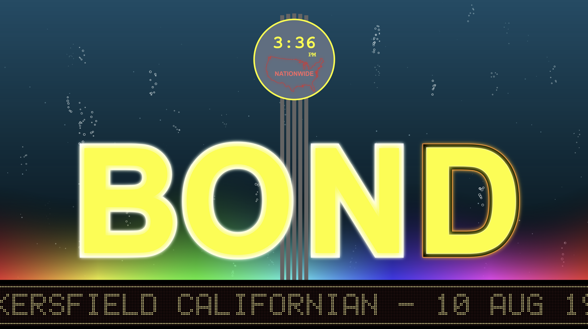
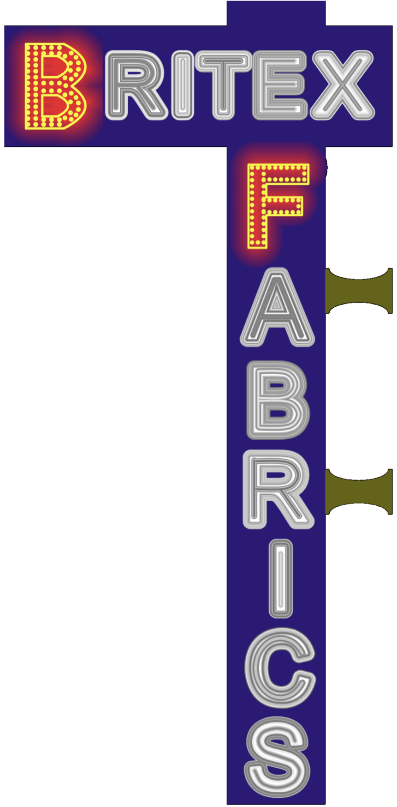
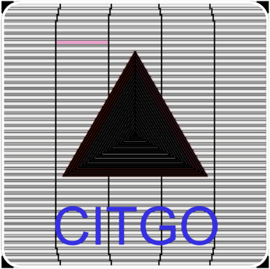
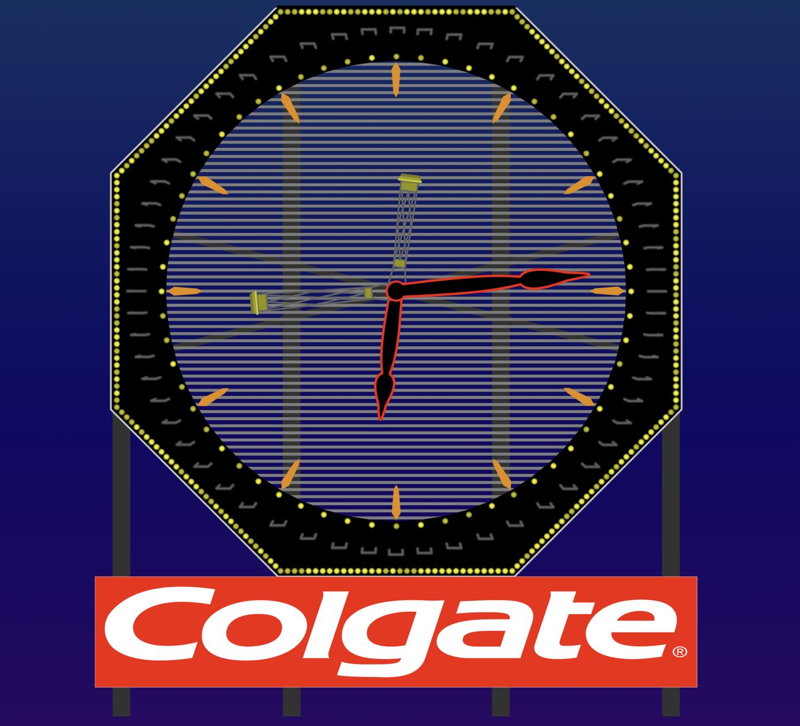
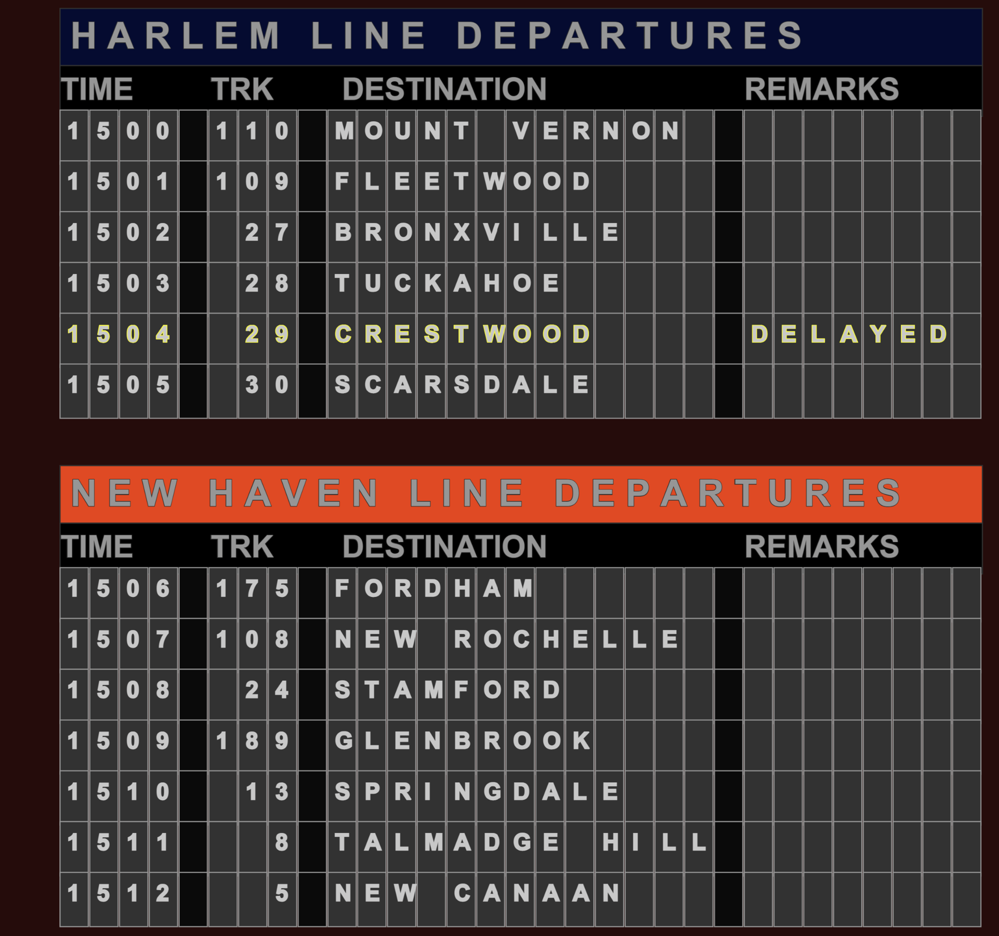
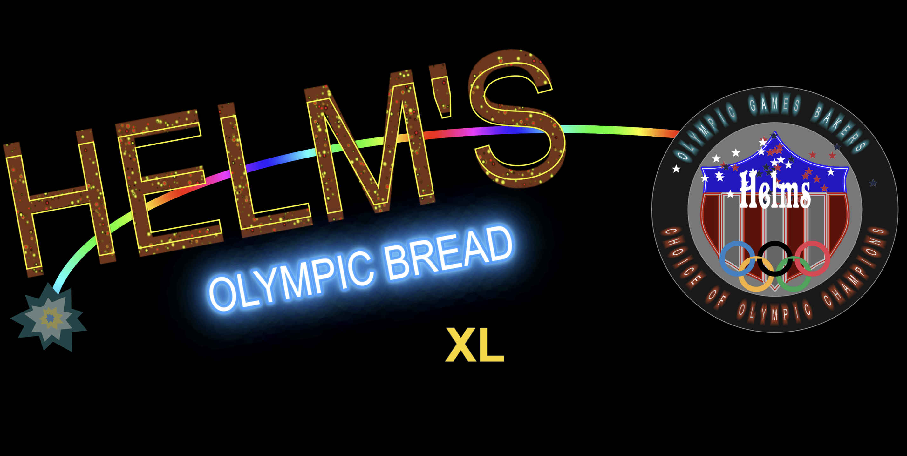
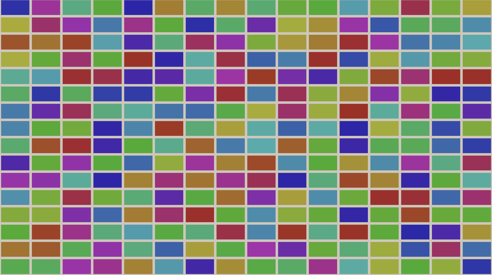
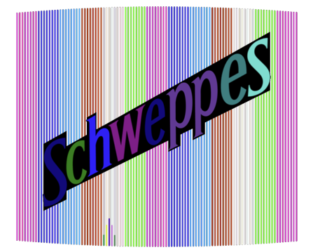
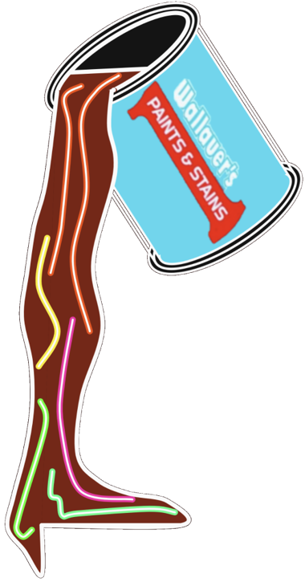

Monatomic Clock (2020)
[...where space meets time.]
Custom digital code, generative color algorithms, dual-layer dynamic interface.
Algorithmic timekeeping utilizing continuously shifting color fields and structural layers to create a non-repeating visual state.
www.monatomicclock.com